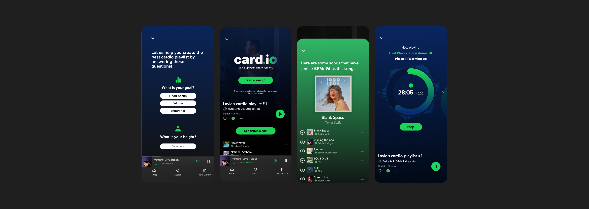
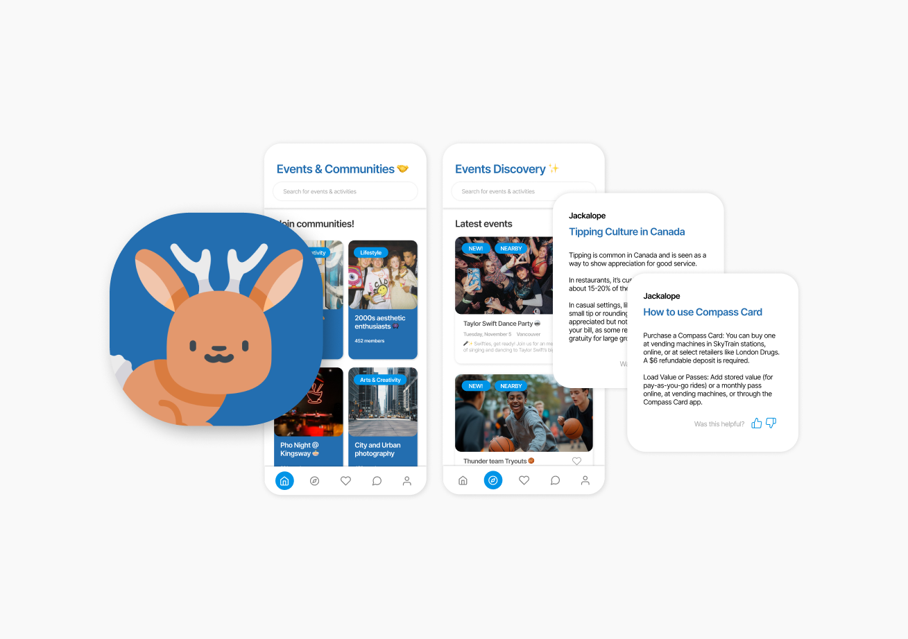
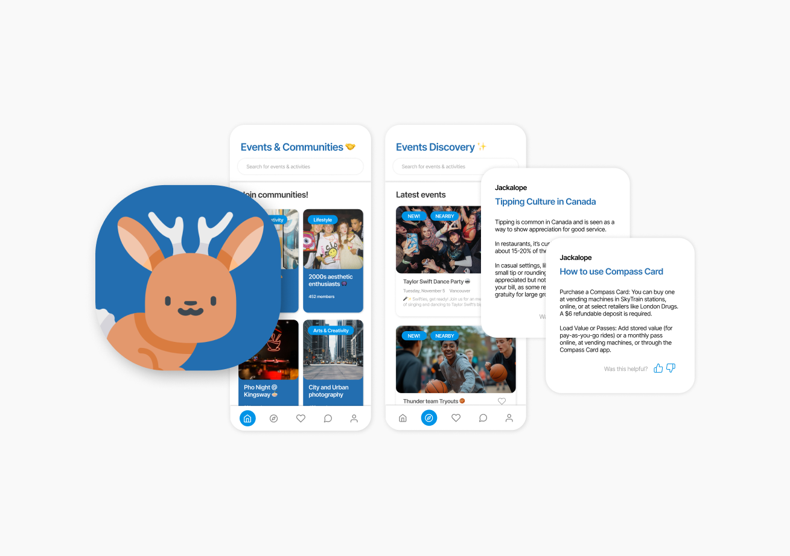

A perfect cardio session starts with the perfect playlist.
This project aims to introduce a new feature on the music streaming app Spotify called card.io.
card.io is catered towards the fitness community and aims to improve the cardio running experience with personalized music selection and playlists.
I worked on this project individually as my own exploration of the UI design field in my undergraduate degree.
Project type:
UX design & research
Duration:
1.5 month
Role:
UX designer, researcher
Application:
Figma
Fitness culture continues to thrive as people increasingly prioritize their physical and mental health. The extended periods of isolation during the pandemic sparked a widespread reflection on well-being, motivating many to start home workouts or invest in gym memberships.
Social media has further amplified this trend, with fitness influencers and content creators driving engagement and inspiring others to embrace healthier lifestyles. This cultural shift towards fitness remains strong, fueled by a growing awareness of the importance of overall well-being.
...And why does this feature matter?
Research has shown that a good playlist can help to ease workouts, reduce fatigues, and increase athletic performance by affecting both heart rate and brain wave.
Studies also show that music that is motivational and synchronized with your exercises have desirable physical and psychological effects on your workouts.
A trending strategy is creating playlists for cardio workouts, which resonate strongly with fitness enthusiasts - proven by significant traction, as influencers use them for engagement and connect with audience.
1/3
Influencers' conventional template.
Influencers tend to follow a common, conventional template of a cardio session with 3 phases: Warm-up, Endurance and Cool-down.
2/3
Viewer's requests for artist-specific playlists.
The main interaction between influencers and viewers involves viewers asking influencers to make cardio playlists specific for their favourite artist or album.
3/3
Playlists with carefully organized songs.
The playlists are carefully structured and organized in a way that makes sense to the session. The faster the treadmill (MPH), the faster the song (BPM).
Demographic
Age range:
18 to 40 years old.
Location:
Urban and suburban areas with access to gyms, running trails, or outdoor fitness spaces.
Occupation:
High school or University students, working professionals.
Fitness level:
From beginner to intermediate and advance.
Tech-savvy cardio
Fitness trackers, smartwatches, and cardio apps are widely used by this group to track heart rate, calories burned, distance, and more.
Some even compete virtually on platforms like Strava, turning cardio into a gamified experience.
Fitness enthusiasts
Fitness activities:
Typically work out 3-5 times per week.
30-90 minutes per session.
Technology usage:
Intermediate to advanced general technology users (familiar with smartphones and mobile apps navigations).
Intermediate users of fitness tracking apps such as Nike Run Club, Fitbit, or Strava.
Prefer using wireless headphones while working out (AirPods, Sony, etc.).
Common challenge 1
Unique physical attributes.
Users usually require the needs for customization due to their unique physical attributes (height, weight, their personal endurance limit)
Common challenge 2
Personal preferences of songs.
Playlists made by influencers usually are based off of an artist and their songs, but sometimes their own fans have their personal preferences of the songs.
Common challenge 3
Struggle in customizing.
Users feel uninformed and not confident in making changes on the existing playlist made by influencers.
Problem statement
"How can I make sure that runners feel more informed and confident in customizing their own cardio playlists?"
... personalized, pre-made cardio playlists.
Songs are strategically organized to match different phases of the session: warm up, endurance and cool down (Auto mode).
1/4


... a more personalized running experience.
Taking user’s physical attributes and goals into consideration through questionnaire.
2/4


... real-time report of information related to the session.
Timer, current song’s BPM, suggested MPH, suggested incline, etc.
3/4


... assistance for runners in editing their cardio playlist.
Suggests songs within the same range of BPM.
Sorting songs based on BPM.
4/4


Try it yourself!
INITIAL SKETCHES & DRAFT


The first sketches and draft prototype
HEURISTIC EVALUATION
Early-stage testing to discover potential issues
Heuristic violated 1
Slidebar design gives false impression.
Consistency & Standard
The straight slidebar in card.io resembles the draggable bars on platforms like YouTube or Netflix, but it functions solely as a progress indicator and isn’t interactive.

Non-interactable slidebar design for cardio process

Interactable slidebar design on YouTube
Heuristic violated 2
Chosen preferences are inaccessible, requires users to rely on their memory.
Recognition rather than recall
The initial questionnaire which is crucial for creating the cardio playlist, does not display users' past responses or allow them to view or edit their previous answers.
USER TESTING & INTERVIEWS
Understanding runners' behaviours
Study goals
Understand the runner’s behaviour before running, while creating the playlist.
How well the feature supports the runner during the session?
How well the runner utilize the support from the feature?
Core tasks
Prepare & edit the playlist before running.
Set up the phone to prepare for running.
Edit the playlist during running.
Accessing the feature’s support during running
Some primary responses
“I barely ever put my phone in my pocket. I would rather put it on the treadmill so I can see what song is playing at that moment.”
Phone is stationary and at arm's length.
The user keeps their phone visible on the treadmill, not in their pocket, for easy interaction and information access.
Values constant visual confirmation.
Current track and possibly other playback details, such as time remaining or tempo (BPM), incline, etc.
Appreciates minimal distractions and glanceability.
For users who are constantly moving such as runners, glanceability and accessibility of information should be prioritized.
“If I don’t like the song, I will change to the next one - it’s kinda hard though. Since I was running, having to press my finger on a single point on the screen is hard and I sometimes missed the “next” button.”
Struggles with small interaction areas.
Small touch targets (e.g., the “next” button) are difficult to press accurately during physical activity.
Appreciate low precision, high accuracy interactions.
The user desires an effortless and distraction-free way to control and access information while running.
“It seems like a lot to me at first and took me a few seconds to see the MPH number clearly since I was running so fast! So I just put the phone to sleep and turn it back on when I need to see how far I have come, or what song is playing next.”
Difficulties in reading key metrics while in motion.
While in motion, such as running, users find it difficult to focus on the display due to the physical activity involved.
Cognitive overload with information.
Information are displayed all at once (MPH, BPM, Incline.) along with progress bar while having no clear hierarchy, leading to user having cognitive overload.
Prioritization of use cases.
Progress report of how far the runner has come and music playback can be considered high-priority elements among all elements.
REFINED INTERFACE
3 key design decisions:
Click here to see card.io's final interface.
Key design decision 1
Instead of showing session's details all at once, chunking and divide information into categories and show 1 at a time.
Reduce the cognitive overload, optimize for glanceability, and minimize the tapping interaction, which is difficult to perform while running.
Key design decision 2
Replace the progress bar with a circular design for a more intuitive and conventional progress indicator.
Opt for a circular layout to align with conventional timer designs, commonly recognized by users.
Incorporate a thick bezel to improve glanceability.
Key design decision 3
Integrate a simple swiping interaction instead of tapping to navigate through the categories.
Natural Gesture: Swiping is a more intuitive and fluid motion that aligns with natural hand movements.
Larger Interaction Area: Doesn't require precise targeting, ideal for users on the move, such as runners.
Refined running interfaces with circular design
 
